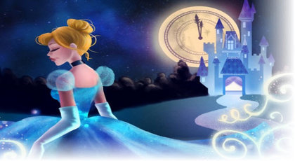

Kül Kedisi

Bir zamanlar güzeller güzeli bir kız varmış. Annesi ölünce babası yeniden evlenmiş.
Üvey annesi de ilk evliliğinden olan iki kızıyla birlikte gelip eve yerleşmiş.
Bu iki kız, yeni kız kardeşlerinden hiç hoşlanmamış. Odasında ne var ne yoksa tavan arasına fırlatıp atmışlar.
Ona bir kardeş gibi davranmak şöyle dursun, bütün ev işlerini üzerine yıkmışlar.
Ev işleri bittikten sonra bile kızın onlarla oturmasına izin verilmiyormuş. Akşamları, mutfakta, sönmekte olan ocağın önünde duruyormuş tek başına,
ellerini küllere doğru tutup ısınmaya çalışarak. Bu yüzden üvey kız kardeşleri ona “Külkedisi” adını takmışla.
Bir gün iki kız kardeşe sarayda verilecek bir balo için davetiye gelmiş. İkisi de heyecandan deliye dönmüşler. Herkes Prens’in evlenmek istediğini biliyormuş.
‘Bakarsın ikimizden birini seçer, belli mi olur?’ diye düşünmüşler.
İki kız kardeş de kendilerini mümkün olduğunca güzelleştirmek için hemen kolları sıvamışlar. Fakat maalesef bu biraz zormuş
çünkü Külkedisi’nin aksine bayağı çirkinmiş her ikisi de!
Balo akşamı, üvey kardeşleri gittikten sonra Külkedisi mutfakta oturmuş ve içn için ağlamaya başlamış.
“Neyin var, neden ağlıyorsun Külkedisi?” diye sormuş bir kadın sesi.
“Ben de baloya gitmek istiyordum,” demiş hıçkırarak Külkedisi.
“Gideceksin öyleyse,” demiş ses. Kül kedisi duyduğu sese doğru dönüp bakmış, şaşkınlıktan donakalmış.
Güzel bir kadın duruyormuş yanıbaşında.
“Ben senin peri annenim,” demiş kadın. “Şimdi kaybedecek zamanımız yok! Bana bir balkabağı getir hemen!”
Külkedisi bir balkabağı getirmiş. Peri annesi sihirli değneğiyle dokununca, balkabağı birdenbire altından bir fayton oluvermiş.
“Şimdi de altı fare...” Külkedisi altı fare bulup getirmiş, peri annesi onları hemen ata dönüştürmüş.
“Bir sıçan...” Onu da arabacı yapmış.
“Ve altı kertenkele...” Onları da faytonun arkasında koşacak altı uşağa çevirivermiş.
Nihayet Külkedisi’ne gelmiş sıra. Peri değneğiyle bir dokununca Külkedisi’nin yırtık, pırtık giysileri nefesleri kesecek harika bir elbiseye dönmüşmüş.
Ayaklarında bir çift camdan ayakkabı pırıl pırıl parlıyormuş.
“Bir şey var yalnız,” demiş Peri. “Gece yarısına kadar eve dönmelisin. Saat on ikide elbisen tekrar eski giysilerine, faytonun balkabağına,
atların fareye dönüşecek. Prens’in bunu görmesini istemezsin herhalde? Şimdi git, dilediğince eğlen.”
O gece Külkedisi balonun yıldızı olmuş. Baloya katılan hanımlar (özellikle de iki üvey kız kardeşi) onun elbisesini çok beğenmişler ve terzisinin
adını öğrenmek için ona yalvarmışlar. Beyefendilerin hepsi onunla dans etmek için birbirleriyle yarışmışlar.
Prens ise götür görmez ona âşık olmuş! Ve o andan sonra hiç kimseye bu kızla dans etmek için izin verilmemiş.
Saatler saatleri, dakikalar dakikaları kovalamış ve Külkedisi saat tam on ikiyi vuracağı sırada evde olması gerektiğini hatırlamış.
“Gitme!” diye seslenmiş Prens arkasından, ama Külkedisi bir an bile durmadan koşup oradan uzaklaşmış. Sokağa çaktığında elbisesi tekrar eski elbiselerine dönüşmüş.
Geriye kala kala camdan ayakkabıların bir teki kalmış. Diğer tekini nerede kaybettiğini bilmiyormuş.
O gece Külkedisi uyuyana kadar ağlamış. Hayatının bir daha asla o geceki kadar harika olamayacağını düşünüyormuş.
Ama bu doğru değilmiş. Ayakkabının diğer tekini sarayın merdivenlerinde bulmuşlar. Ertesi sabah Prens ev ev dolaşıp ayakkabıyı tek tek bütün genç kızlara denetmiş.
“Bu ayakkabının dün gece karşılaştığım güzel sahibini bulamazsam yaşayamam,” demiş.
Derken Külkedisi’nin evine gelmiş. Üvey kardeşleri ayakkabıyı denemişler. Olmamış. Ayaklarına girmemiş bile.
Prens çok üzgünmüş çünkü uğramadığı sadece birkaç ev kalmış. Tam oradan ayrılacakken evin hizmetçisi dikkatini çekmiş.
“Hanımefendi,” demiş Prens Kül kedisi’ne, “bir de siz deneseniz?”
“O mu deneyecek? Ne münasebet!” diye haykırmış üvey kardeşler.
Fakat Prens ısrar etmiş. Kül kedisi’nin ne kadar güzel bir kız olduğu gözünden kaçmamış. Tabii ayakkabı Kül kedisi’nin ayağına kalıp gibi oturmuş.
Prens diz çöküp Kül kedisi’ne evlenme teklif ederken iki üvey kardeşe de öfke ve kıskançlıkla olanları seyretmek kalmış. Külkedisi Prens’in teklifini tabii ki kabul etmiş.